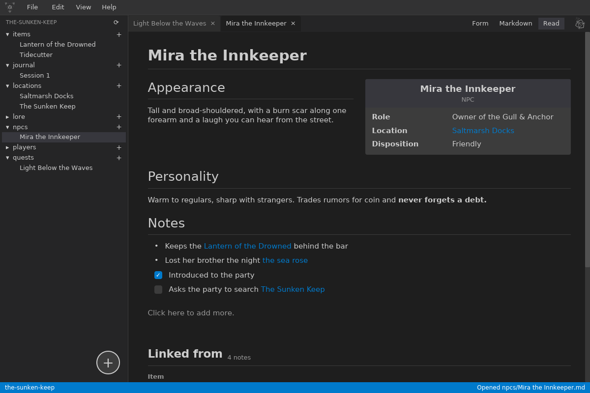
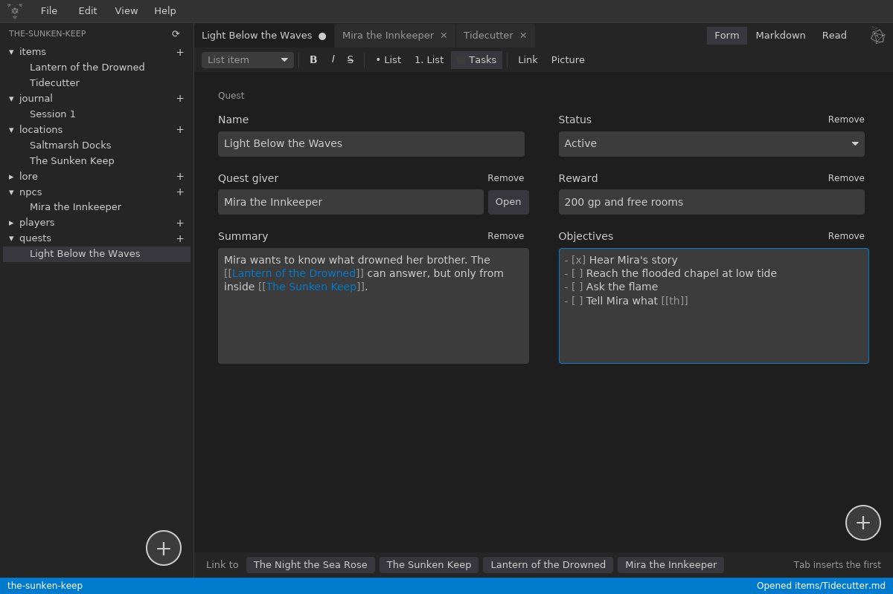
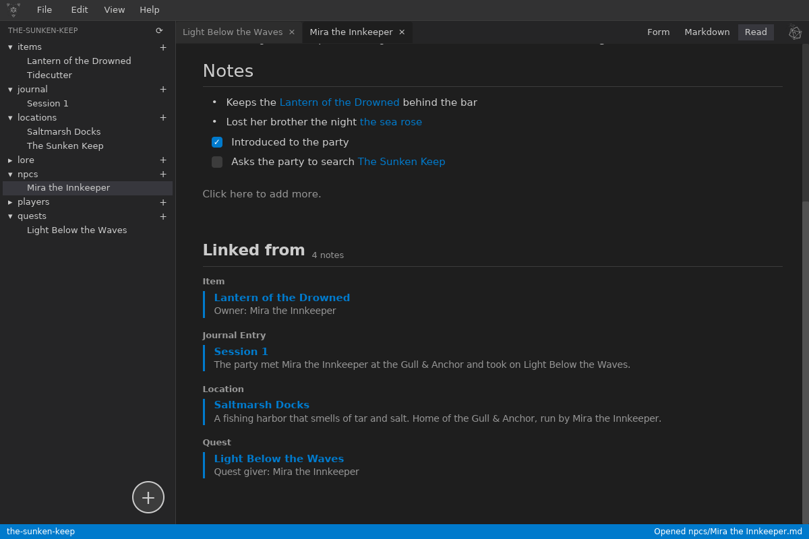
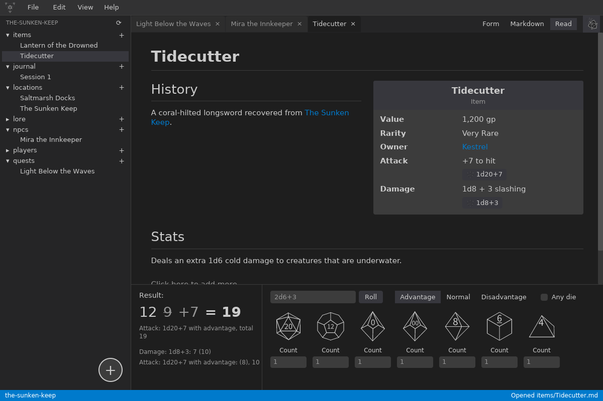

The Problem
Game masters pour years into their campaigns: NPCs, locations, quests, lore, and session notes. Most campaign tools keep that work in a proprietary format on someone else's server, so it lasts only as long as the service does. Plain text files last forever, but a folder of loose notes has no structure, no links, and no checks.
Dungeon Elements gives you both. A campaign is just a folder, and every note is a Markdown file with YAML front matter that Obsidian and any text editor can read. Each folder can define the fields its notes have, so an NPC opens as a form with a role, a location, and a disposition. Notes link to each other with [[links]] that survive renames, and every note shows what links back to it, so the campaign grows into a wiki of the world.
Solo project: design, code, logo, and releases
Rust 2024 • iced 0.14 • serde • pulldown-cmark • syntect • notify • GitHub Actions
Early development, version 0.2.0 (October 2026). About 17,000 lines of Rust and 111 unit tests.
Windows, Linux, and macOS (universal). No accounts, no cloud.
How a Note Works
The form, the Markdown, and the reading view are three views of the same note. Nothing about a note lives anywhere except in its own file.
A folder declares a type
A _type.yaml in a folder lists the fields its notes have: text, numbers, choices, tags, checkboxes, long text, or links to notes in another folder. New campaigns get a starter set for items, NPCs, locations, quests, lore, players, and a journal.
Edit it as a form or as text
Short fields come from the front matter and long text from ## sections, the layout Obsidian uses. A formatting toolbar writes the Markdown, so nobody has to learn it, and the Markdown marks are dimmed so the words stand out.
Read it like a wiki page
The reading view renders headings, tables, task lists, pictures, embedded notes, and syntax-colored code, with the fields in an infobox. Click any paragraph to edit it in place, or tick a task box with a click.
Design decisions worth calling out
- The user's files are the source of truth. There is no database to fall out of sync. If someone stops using the app, their campaign comes with them, untouched.
- Links that never break. Renaming or moving a note rewrites every link to it across the campaign: in note text, in front matter fields, and in open tabs with unsaved changes. Shown text, heading links, embeds, and aliases are kept, and names are written back with the escaping YAML needs.
- Edits from other apps are expected. The campaign folder is watched, so notes edited, renamed, or deleted in Obsidian or a file manager are picked up right away: tabs follow renamed notes, links are updated, and saving never silently overwrites an outside edit.
- Check, then offer fixes. Every note is checked for problems like broken front matter, a word in a number field, or a link to a note that was renamed elsewhere. Each problem comes with fixes to pick from (link the note it probably meant, create the missing one, or ignore it), and checks re-run as you type.
- Any name works. Note names can hold apostrophes, quotes, colons, accents, and emoji. The app keeps the name as typed and picks a file name that's valid on Windows, macOS, and Linux, adding an alias so links still find it.
The App

[[ closes the link and suggests notes by name, alias, or file name. Pressing Enter in a task list started the next task.
The interface is built with iced, a native Rust GUI library that follows the Elm architecture: all state lives in one model, every input is a message, and the view is a pure function of the state. That made features like tabs, unsaved-change prompts, right-click menus, and live reloading from disk predictable to add.
The built-in dice roller parses expressions like 2d6+3, d%, and 4d6kh3, with advantage and disadvantage. Fields with dice in them, like a sword's damage, get roll buttons right on the note.
The app ships as a single file with themes and templates compiled in. Every color comes from a user-editable YAML theme, including code highlighting. A GitHub Actions workflow builds the universal macOS app and merges the Apple silicon and Intel builds with lipo.

Engineering Choices
Why Rust
A campaign manager holds years of someone's creative work, so stability matters more than anything. Rust gives a fast native app with no runtime to install, and its type system catches whole classes of bugs before they reach a user's files.
Small, focused modules
Note parsing, links, backlinks, file checks and fixes, the folder watcher, the reading view, and the dice roller each live in their own module, with 111 unit tests on the logic that reads and rewrites users' files.
Interoperable by design
Notes use Obsidian's front matter, [[link]], alias, and embed formats, so users can switch between the two tools freely. Hidden folders like .obsidian are left alone.
Planned and documented
The work follows a phased plan with checklists, every release is recorded in a Keep a Changelog file with semantic versions and known limitations, and a release guide covers packaging for all three platforms.
What's Next
Version 0.1.0 finished Phase 0, Call to Action: campaigns, typed notes, file checks, themes, and releases for three platforms. Version 0.2.0 finishes Phase 1, Inciting Incident: links, backlinks, the reading view, the formatting toolbar, and the dice roller. The next phases build tools for running the game on top of that wiki.
- Player, NPC, and quest management
- Name and roll table generators
- A journaling tool for solo play and session notes
- An SVG map editor, with pins that link to notes
- Map generators, from dungeons up to whole worlds
- Campaign templates and player handouts